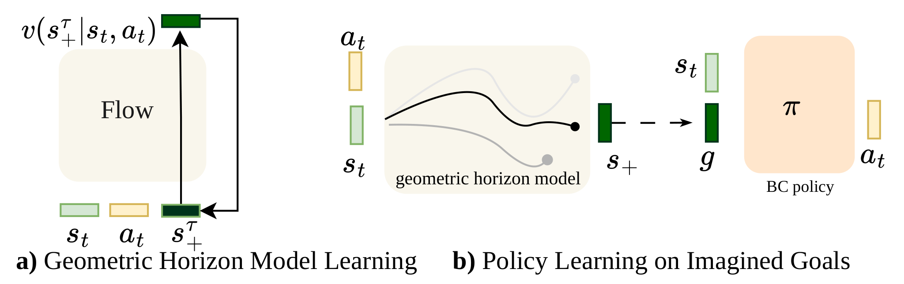
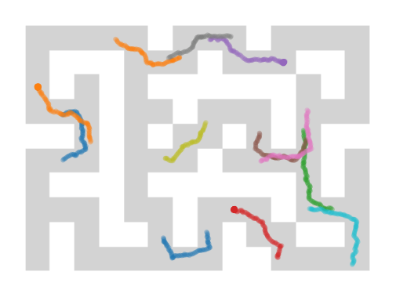

Imagining Goals with Geometric Horizon Models for Policy Generalization
†Equal Advising
Abstract
Training from offline data has allowed for substantial progress in domains such as robotics, leading to general-purpose policies that can be easily applied zero-shot or efficiently finetuned for downstream tasks. However, these policies can still have poor generalization, both due to the choice of modeling objective and from learning from a static dataset. In this work, we focus on the challenging task of zero-shot goal generalization, where a policy is evaluated on unseen tasks that require combining its existing knowledge (compositional generalization). An avenue for improving a policy's generalization is by generating new experience with world models; however, such generation has proven difficult for longer horizons. Thus, to alleviate this issue, we propose TD-Aug, which samples from a geometric horizon model and allows for directly imagining novel outcomes that can be achieved by composing existing knowledge. We demonstrate that training on these future outcomes as goals for goal-conditioned BC policies significantly improves generalization in stitching-based OGBench tasks.
Overview
Overview of TD-Aug. We a) train a GHM on an offline dataset to approximate samples from the successor measure of the behavior mixture policy. Then, b) we train BC policies on a mix of ground-truth and generated goals, improving zero-shot generalization on compositional tasks:

TD-Aug generates goals through a GHM that samples likely future states (s+), conditioned on the current state and action via Mβ(· | s, a). The GHM stitches across trajectories, predicting which outcomes are likely when composing behavior starting from different actions:


Results
Results on OGBench “stitch” tasks. TD-Aug enables BC trained on short trajectories or atomic tasks to generalize to long-horizon, composite goals.
pointmaze-giant-stitch
Training data
GCFBC
(task success 0%, overall success 0%)
TD-Aug (MCHC)
(task success 70%, overall success 54%)
puzzle-4x4-stitch
Training data
GCFBC
(task success 0%, overall success 0%)
TD-Aug (MCHC)
(task success 34%, overall success 40%)
cube-triple-stitch
Training data
GCFBC
(task success 0%, overall success 20%)
TD-Aug (MCHC)
(task success 25%, overall success 31%)
Seed-0 demonstrations for each policy pair. Success rates average three checkpoints per seed, then three seeds.
Quantitative Results
| pointmaze | GCFBC | + Cluster-Aug | + Dyn-Aug | + MC-Aug | + TD-Aug2 | + TD-Aug | GCIQL | QRL | CRL | HIQL |
|---|---|---|---|---|---|---|---|---|---|---|
| pointmaze-medium-stitch | 55 ± 10 | 89 ± 5 | 94 ± 6 | 70 ± 2 | 96 ± 1 | 99 ± 0 | 74 ± 1 | 88 ± 5 | 4 ± 2 | 71 ± 8 |
| pointmaze-large-stitch | 26 ± 6 | 62 ± 8 | 51 ± 10 | 28 ± 17 | 40 ± 3 | 97 ± 3 | 40 ± 1 | 89 ± 15 | 0 ± 0 | 18 ± 4 |
| pointmaze-giant-stitch | 0 ± 0 | 3 ± 6 | 0 ± 0 | 0 ± 0 | 0 ± 0 | 54 ± 17 | 0 ± 0 | 54 ± 9 | 0 ± 0 | 0 ± 0 |
| pointmaze-teleport-stitch | 44 ± 7 | 47 ± 2 | 40 ± 7 | 48 ± 3 | 45 ± 4 | 66 ± 3 | 27 ± 1 | 2 ± 4 | 10 ± 5 | 30 ± 3 |
| Average | 31 | 50 | 46 | 37 | 45 | 79 | 35 | 58 | 4 | 30 |
| visual antmaze | AE-GCFBC | + MC-Aug | + TD-Aug2 | + TD-Aug | GCBC | GCIQL | QRL | CRL | HIQL |
|---|---|---|---|---|---|---|---|---|---|
| visual-antmaze-medium-stitch | 45 ± 4 | 60 ± 2 | 56 ± 1 | 84 ± 7 | 69 ± 4 | 9 ± 0 | 0 ± 0 | 82 ± 2 | 92 ± 1 |
| visual-antmaze-large-stitch | 12 ± 1 | 19 ± 1 | 9 ± 0 | 28 ± 1 | 21 ± 6 | 1 ± 0 | 1 ± 0 | 29 ± 6 | 46 ± 2 |
| Average | 29 | 40 | 33 | 56 | 45 | 5 | 1 | 56 | 69 |
| Environment | GCFBC | + TD-Aug2 | + TD-Aug | GCIQL | HIQL | |
|---|---|---|---|---|---|---|
| play | stitch | stitch | stitch | stitch | stitch | |
| cube-double | 75 ± 1 | 20 ± 0 | 78 ± 2 | 84 ± 0 | 63 ± 1 | 6 ± 2 |
| cube-triple | 35 ± 5 | 20 ± 0 | 36 ± 5 | 31 ± 2 | 8 ± 2 | 0 ± 0 |
| puzzle-4x4 | 23 ± 2 | 0 ± 0 | 18 ± 0 | 40 ± 2 | 16 ± 5 | 0 ± 0 |
| Average | 44 | 13 | 44 | 52 | 29 | 2 |
Mean ± standard deviation over 3 seeds, after averaging the last 3 checkpoints within each seed. TD-Aug2 uses TD2-β; TD-Aug uses MCHC-β. Bold highlights the best BC augmentation and the best method overall on stitching datasets.